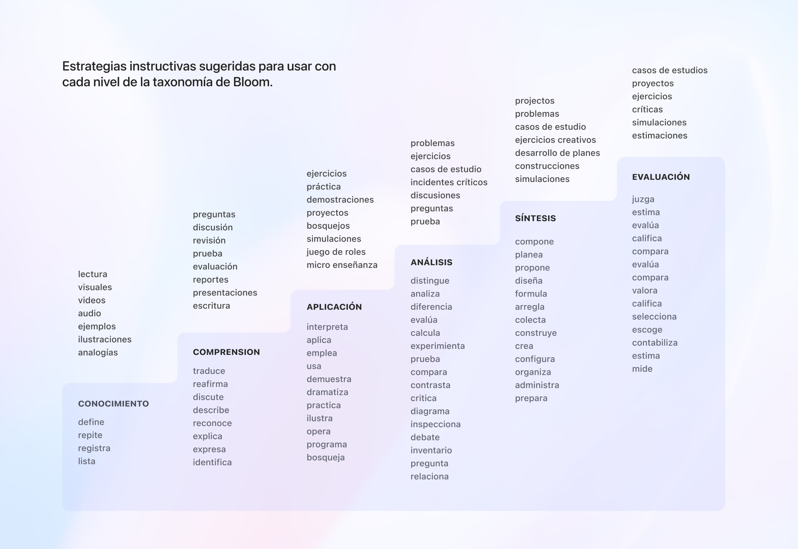
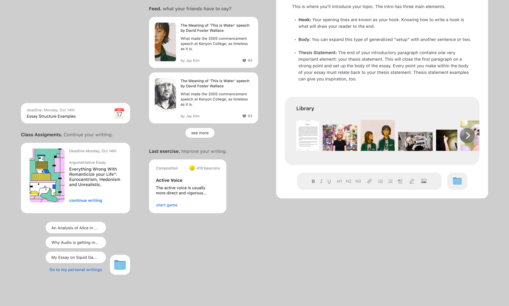

Delivering digital solutions for PreK-12 Spanish literacy improvement.
BeeReaders is redefining the English language learning space with a groundbreaking ed tech platform that builds foundational literacy skills for K-12 Spanish-speaking students. By blending personalized learning with authentic Spanish content, BeeReaders creates a truly immersive and engaging reading experience.
Highlights of the project
Won $150K Tools Competition award
Includes 20 categories of writing
Includes 6 levels of writing
I was invited to develop a solution for a writing module on the existing BeeReaders reading platform to participate in Tools Competition — an annual multi-million dollar funding opportunity for ed tech innovations using digital technology, big data, and learning science to meet the urgent needs of learners worldwide. For this project, I partnered with Kristina Cordero, Director of Research at BeeReaders.
Tools Competition gave us the opportunity to work on a project that was on the company’s business plan for the year, while getting resources to develop the writing module full-time. We named it Escritura+, with the goal of turning it into a set of literacy games in Spanish that target essential writing skills (like vocabulary, building accents and syntax), while simultaneously giving students a fun but useful break in the very long process of learning to write.
This project reimagined how writing can be explored, bringing the real-world experience of learning to write into the digital world. I developed this project with the concept of the student’s desk — where they have their notebooks, dictionaries, books, and supporting material — in mind. To make the space familiar and intuitive, I wanted to keep all those elements in the same space, avoiding cognitive overload and students having to go to different websites to finish their homework.
Students counted with a tools space in which they had access to prompts for their writing, a dictionary, different templates to begin with and make their writing easier, and sample texts with clear and organized writings structures. The design’s seamless interaction points allowed the user to focus on the task at hand by keeping the attention in the same place.
Tools for writing and uploading images or videos, as well as for tracking the writing stages, were embedded in the platform, making it easier for students to keep their work there, and at the same time, allowing teachers to asses the students in the same platform.

We designed this project around Bloom’s Taxonomy for learning, which takes into consideration the cognitive, affective and psychomotor domains. The cognitive domain focuses on intellectual skills and knowledge acquisition, from basic recall to complex creation. The affective domain focuses on the attitudes, values, interests, and appreciation of learners. The hierarchy associated with it begins with receiving and listening to information, and extends to characterization or internalizing values and acting upon them. Finally, the psychomotor domain encompasses the ability of learners to physically accomplish tasks and perform movement and skills. Bloom’s Taxonomy is one of the most recognized learning theories in the field of education, for this reason, we wanted this theory to form the heart of the product.
Educators often use Bloom's Taxonomy to create learning outcomes that target not only subject matter but also the depth of learning they want students to achieve, and to then create assessments that accurately report on students’ progress towards these outcomes.
This project reimagined how writing can be explored, turning the—often very lonely—writing process into a collaborative experience with room for students’ personal exploration in different writing categories like poetry, literature, editorial, research, essay, short stories, and others.

By blending a user-centered approach with all the tools the digital world currently offers to students, the platform creates flexibility and a new interface language, resulting in a fun, productive, and functional space for students. A fusion of the known physical world, and the digital space that will evolve as the tools do.